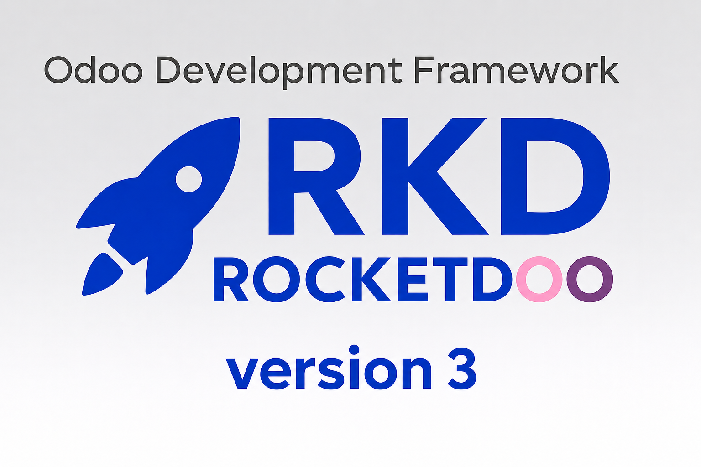
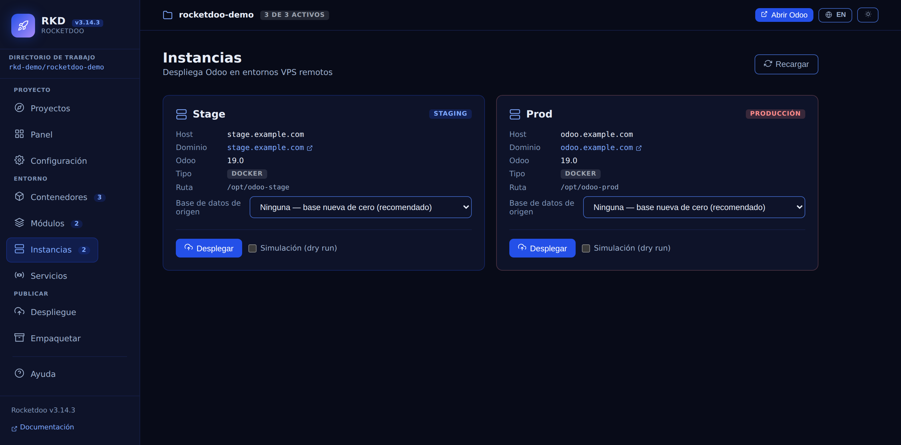

¡Bienvenido a RKD como ROCKETDOO!
Versión 3.15 de ROCKETDOO — los parámetros de rendimiento de Odoo configurables por entorno, además de sembrar una instancia en el VPS con tu base de desarrollo, un pre-flight que frena un deploy antes de que rompa, Enterprise y repos de terceros que llegan al servidor, HTTPS en el VPS y Odoo 20.

Rocketdoo es una plataforma de desarrollo y entrega para equipos Odoo que estandariza, automatiza y abstrae el ciclo de vida de los entornos Odoo, desde el desarrollo local hasta el despliegue.
Rocketdoo es un framework desarrollado en Python que tiene como objetivo proporcionar un entorno de desarrollo rápido y eficiente.
Con Rocketdoo podrás desplegar, en simples pasos, uno o varios entornos para desarrollar en Odoo, en todas sus ediciones y versiones.
Te permitirá crear nuevos módulos o funcionalidades tanto para la edición Enterprise como para la edición Community.
Novedades en la versión 3.15
⚙️ Los parámetros de rendimiento de Odoo, por entorno
Nuevo en la 3.15. Workers, hilos de cron y límites de memoria y de tiempo dejaron de quedar fijados por el nombre del entorno: un bloque
resourcesen.rkd/instance.yamllos define por entorno, yrkd instance initlos pregunta.
environments:
prod:
resources:
limit_time_cpu: 600 # segundos; el default de 60 de Odoo parte al medio una importación grande
limit_time_real: 1200
workers: 4
Todos los campos son opcionales y uno ausente conserva el default que implica el nombre del entorno,
así que un instance.yaml sin el bloque se despliega exactamente igual que siempre.
El caso para el que existe: un proyecto cuyo odoo.conf sube los límites de tiempo para
importaciones grandes y reportes pesados. Desplegarlo escribía 60/120 encima de esos valores,
cortando las dos operaciones a la mitad — y editar el archivo en el servidor no era solución, porque
el deploy siguiente lo reescribe sin ninguna guarda, así que el ajuste a mano se perdía en silencio.
El chequeo memory del pre-flight ahora suma los valores efectivos de ese entorno en vez de las
constantes de Rocketdoo, así que un número que no entra en el VPS bloquea el deploy antes de escribir
nada, y lo nombra. El dimensionamiento sigue sin leerse del servidor: la RAM física no es la RAM
disponible.
Los siete valores, los defaults por entorno y lo que heredan los deploys nativos
Novedades en la versión 3.14
Entre la 3.5 y la 3.14.3 hay nueve entregas, y casi ninguna agregó un comando. Lo que hicieron fue
convertir rkd instance en un despliegue que revisa el servidor antes de tocarlo — más Odoo 20,
un pack que deja tus secretos en casa, y una GUI que dejó de congelarse.
🌱 Sembrá una instancia en el VPS con tu base de desarrollo
Nuevo en la 3.14. Un entorno desplegado ya no tiene que arrancar con una base vacía. Elegís una base local cuando configurás el entorno y el deploy la vuelca, la transfiere, la restaura en el servidor —filestore incluido— y neutraliza lo que no debe correr ahí.

rkd instance init # "Database for stage:" → elegí una base local, o ninguna
rkd instance deploy -e stage
Hay tres reglas que conviene entender antes de usarlo:
- Pasa una sola vez por entorno. El deploy escribe una marca dentro de la base restaurada, así que un redeploy nunca vuelve a restaurar. Sembrar de nuevo exige dropear la base en el VPS a mano — deliberadamente, porque la alternativa es un flag que pisa la producción de un cliente con un dump de desarrollo.
- Una base existente nunca se pisa. Si el destino ya sirve un Odoo que Rocketdoo no sembró, el deploy se niega y lo dice.
- La neutralización depende del destino. Los dos regeneran el UUID de la base y desactivan el servidor de correo de Mailpit, que apunta a un host que en el VPS no existe. Sólo staging desactiva además las acciones programadas, los servidores de correo y los proveedores de pago — hacerle eso a producción apagaría los crons de la instancia que estás lanzando.
La contraseña del admin de una base sembrada no se reemplaza: sus usuarios conservan las suyas.
🛡️ Un pre-flight que frena antes de romper, y un dry run que no escribe nada
Desde la 3.11. Los dos deployers arrancan por un pre-flight: una sola sesión SSH de sólo lectura que junta hechos del servidor y los clasifica en bloqueantes y avisos. Un bloqueante corta el deploy antes de escribir nada.
El --dry-run antes imprimía "Deployment successful" sin tocar el VPS — y además escribía un archivo
de secretos en local. Ahora corre ese mismo pre-flight, conecta sólo para leer, no escribe nada y sale
con código distinto de cero cuando algo bloquea. Así que esto por fin significa lo que parece:
Revisa la conexión, Docker, sudo, la ruta remota, el espacio en disco, la memoria, tu clave SSH y el
agente, el archivo de gitman y sus repos, el directorio de Enterprise, la versión de PostgreSQL, los
identificadores de la base, Traefik y la URL pública.
🏢 Enterprise y los repos de terceros por fin llegan al servidor
Desde la 3.11, completado en la 3.13. Elegir Enterprise en el wizard declaraba el directorio en todos lados y no lo ponía en ninguno: Odoo arrancaba sin los addons. Los repos de gitman se clonaban en el VPS y nunca entraban al
addons_path.
Ahora Enterprise viaja de las dos formas — rsync manda tu enterprise/ local, o clone trae
odoo/enterprise en el servidor con el agente SSH reenviado, sin dejar credenciales ahí. Desde la
3.13 el camino nativo instala los repos de gitman exactamente donde los pone el camino Docker y arma
el mismo orden canónico: enterprise, extra-addons, directorios anidados, gitman.
Docker o nativo es una decisión sobre el empaquetado, no sobre lo que obtenés.
🌐 HTTPS en el VPS: rkd instance traefik
Nuevo en la 3.12. El contenedor de Odoo sólo expone su puerto; alguien tiene que contestar en 80/443 y conseguir el certificado.
Instala Traefik en el servidor de ese entorno, una vez por host, con la misma configuración que rkd
traefik renderiza en local. Se puede volver a correr sin miedo —los archivos que retocaste y los
certificados ya emitidos quedan— y el deploy nunca lo corre por vos, porque los puertos 80 y 443 son
del host y no de un proyecto.
🐘 Odoo 20
Desde la 3.7.
odoo20-ceyodoo20-eeentran a los golden paths, yodoo20-celo construye CI en cada release.
La imagen no necesita ningún cambio en el Dockerfile, pero PostgreSQL sí: Odoo 20 pide 16 o superior, contra 13 de Odoo 19 y 12 desde la 15 en adelante. Un proyecto en PostgreSQL 14 no puede pasar a Odoo 20 sin migrar la base antes, y la matriz ahora rechaza esa combinación en vez de dejarla pasar.
Crealo desde la terminal. El formulario de Configuración de la GUI todavía llega hasta Odoo 19, así que usá
rkd init --profile odoo20-cey después administrá el proyecto desde la GUI como siempre.
🔐 Un pack que deja tus secretos en casa
Desde la 3.9.2.
rkd packmetía las credenciales del emisor en el ZIP que le pasaba a otro.
El archivo ya no se lleva .ssh/, .rkd/secrets/, .rkd/instance.yaml, .rkd/deploy.yaml,
traefik/certs/acme.json ni ningún *.env, y ningún symlink entra — un enlace apuntando a un archivo de secretos lo
exfiltraba. El panel nombra todo lo que dejó afuera, que es justamente la lista que el receptor tiene
que reescribir. Desde la 3.10 el verificador además lee los primeros 64 KiB de cada entrada buscando
cabeceras PEM, en vez de confiar en los nombres de archivo. Dos credenciales sí siguen viajando a
propósito —odoo_pg_pass y config/odoo.conf— porque sin ellas el entorno compartido no arranca.
🪪 La copia restaurada recibe su propia identidad Compose
Desde la 3.9. Dos copias compartiendo un mismo nombre de proyecto Compose hacían que Compose tratara los contenedores del original como propios — y el restore de la copia corría
DROP DATABASEsobre los datos del original.
rkd unpack ahora detecta el choque, por docker compose ls y por las etiquetas de los volúmenes
(un proyecto bajado sin -v no figura en el primero pero sus volúmenes siguen ahí), y reescribe la
identidad entera de la copia: nombre de proyecto, imagen, cada container_name, volúmenes y
db_host. Es todo o nada, y si Docker no responde no se renombra nada: nunca adivina.
📧 Mailpit elige un puerto libre
Desde la 3.9.1. Dos proyectos Rocketdoo con
rkd mail onya no chocan.
mail on conserva los puertos declarados en el compose cuando están libres y toma el siguiente libre
cuando no, contando también los puertos que declara un proyecto hermano apagado. Imprime cuál tomó y
lo escribe de vuelta, así un favorito del navegador sigue sirviendo. El 1025 interno nunca
cambia: Odoo siempre le habla a mailpit:1025.
⚡ Una GUI que dejó de congelarse
Desde la 3.14.3. Treinta y cinco handlers de la GUI estaban declarados
asyncsin un soloawait, así que FastAPI los corría en el event loop y cualquier trabajo bloqueante congelaba la interfaz entera, WebSockets de logs incluidos. Un build de Docker podía tenerla cinco minutos quieta.
Ahora corren en el threadpool. Otras dos cosas que la GUI ganó en el camino: ya no necesita internet
para dibujarse (Vue viene incluido, antes un CDN bloqueado dejaba la página en blanco), y la pantalla
del token tiene un campo para pegar, para cuando llegás a http://localhost:8070 sin el query string.
Novedades en la versión 3.5
🖥️ Una GUI que dice dónde estás, en tu idioma

La interfaz se rediseñó alrededor de lo que cambia mientras trabajás:
- Una barra superior fija con el proyecto activo y una pastilla que cuenta los contenedores corriendo, así ninguna pantalla te deja adivinando sobre qué proyecto estás actuando.
- Navegación lateral agrupada — Proyecto, Entorno, Publicar — más una pantalla Proyectos nueva que descubre todos los proyectos Rocketdoo del host y te deja cambiar entre ellos sin reiniciar el servidor.
- Un tema claro que cumple contraste WCAG AA, y sin una elección guardada la GUI sigue a tu sistema operativo en vez de arrancar siempre en oscuro.
- Español e inglés, con un botón en la barra superior. Lo que la GUI sólo reproduce — logs de
Docker, nombres de addons, nombres de contenedor, el estado crudo de
docker compose ps— queda intacto en los dos.
⚙️ CI para tu proyecto (rkd ci)
rkd ci init escribe un workflow de GitHub Actions dentro de tu proyecto que lintea tus addons
y los instala contra un Odoo real:
rkd ci init # escribe .github/workflows/rkd-ci.yml
rkd ci prepare # regenera lo que un clon limpio no trae
rkd ci modules # los módulos instalables que Odoo alcanza
Nunca pisa un workflow que difiera de lo que escribiría, y el job caro —el de instalación— está limitado a los pull requests por defecto, porque en repos privados los minutos de Actions son una cuota compartida.
📁 Addons anidados que Odoo realmente alcanza
Odoo lee un addons_path estático, así que un módulo en addons/oca/web_responsive era invisible
salvo que ese subdirectorio estuviera listado. Ahora rkd up, rkd restart, rkd build --rebuild, rkd ci prepare, el Up de la GUI y el update
por módulo mantienen la ruta sincronizada con lo que hay bajo addons/; rkd info avisa sin
escribir.
Las entradas que no son de Rocketdoo — el default de Odoo, enterprise, el external_addons de
Gitman, tus propias rutas — se conservan tal cual y en su orden.
📧 rkd mail configura el servidor de correo, no sólo el transporte
Desde la 3.3. rkd mail on ahora también crea el registro ir.mail_server Mailpit (rkd) en tu base, para
que Odoo realmente enrute por Mailpit. off sólo lo archiva — nunca borra, así que un servidor de
correo tuyo no corre riesgo. Los proyectos con más de una base necesitan --db NOMBRE.
🔑 La GUI pide un token de sesión
Desde la 3.4, cada rkd gui imprime una URL que lleva un token de sesión, y la API rechaza todo lo
que no lo traiga. El token vale mientras ese servidor siga corriendo, y reiniciarlo emite uno nuevo. Entrar a http://localhost:8070 a secas ya no funciona — usá la URL
que imprime, o --open.
Novedades en la versión 3.2
La versión 3.2 no agrega un subsistema nuevo: hace predecibles los que ya existen.
🧭 Golden Paths (rkd profiles)
Un golden path es una combinación soportada, con nombre propio, de versión de Odoo, edición y versión de PostgreSQL. En ese momento Rocketdoo traía diez —Odoo 15 a 19, Community y Enterprise; hoy son doce— y pasaron a ser la fuente de verdad tanto del asistente como de la configuración no interactiva:
rkd profiles list # la matriz completa
rkd profiles show odoo18-ce # detalle de un perfil
rkd init --profile odoo18-ce # crear el entorno sin responder preguntas
Tres de ellos (odoo15-ce, odoo18-ce, odoo19-ee) los construía el CI en cada PR de release; el
resto es best effort. La compatibilidad Odoo↔PostgreSQL ahora se valida, así que el asistente ya no
puede armar una combinación no soportada — Odoo 19, por ejemplo, requiere PostgreSQL 13 o superior.
✅ Suite de tests y un gate de CI real
Rocketdoo ahora tiene una suite pytest de más de 900 tests, más ruff para lint, que corre en cada
pull request sobre Python 3.10 a 3.13, con tests end-to-end con Docker, verificación del build del
paquete y una pasada de render y build sobre los golden paths. Ya no queda ningún
continue-on-error: un job en rojo significa que el cambio no se mergea.
🔧 Correcciones que justifican actualizar
- El build de Docker fallaba en Odoo 18 y 19. El
Dockerfilegenerado borraba el marcador PEP 668 en una capa propia, peroapt install python3-devarrastra el paquetepython3.N, que vuelve a colocar el archivo — así que elpip installposterior moría conexternally-managed-environment. Solo las imágenes Ubuntu noble (odoo:18.0,odoo:19.0) traen ese marcador, y por eso las versiones anteriores no se veían afectadas. Ahora el CI construye las cinco imágenes. rkd packfallaba siempre conUnboundLocalErroral usarlo con--no-db, o antes de que existiera alguna base de datos — las dos formas normales de usarlo. Presente en 3.1.8 y anteriores.- La API de la GUI aceptaba peticiones de cualquier origen.
rkd guiahora solo acepta llamadas desde su propio origen. Bindear a127.0.0.1nunca protegió de esto: la petición la hace el navegador del propio usuario, así que cualquier página visitada mientras corría la GUI podía listar el filesystem y bajar los contenedores.
Novedades en la versión 3 de ROCKETDOO
La versión 3 es la entrega más completa de ROCKETDOO hasta la fecha. Conserva todo lo de la versión 2 y agrega cuatro grandes capacidades nuevas:
🖥️ Interfaz Gráfica (GUI)
Rocketdoo v3 incluye su propia GUI web, que se lanza directamente desde la terminal con un solo comando:
La GUI se abre en tu navegador en la URL que imprime rkd gui — desde la 3.4 esa URL lleva un
token de sesión — y ofrece:
- Dashboard — resumen del proyecto con estado de contenedores, versión de Odoo, PostgreSQL y accesos rápidos.
- Control de contenedores — iniciar, detener, reiniciar, construir, descargar y eliminar contenedores sin escribir comandos Docker.
- Visor de logs en vivo — streaming en tiempo real de los logs de cualquier contenedor.
- Mail (Mailpit) — activar/desactivar el servicio de pruebas de email desde la interfaz.
- Módulos — listar y gestionar módulos add-on de Odoo.
- Deploy — ejecutar operaciones de despliegue desde la GUI.
- Instance — gestionar los destinos de despliegue en VPS.
- Pack / Unpack — compartir o restaurar entornos completos de desarrollo.
- Gitman — gestionar dependencias de repositorios de terceros.
- Traefik — configurar la integración del reverse proxy.
- Modo oscuro y claro — alternar el tema según tu preferencia.
📧 Testing de Email con Mailpit (rkd mail)
El nuevo comando mail integra Mailpit — un servidor SMTP local con interfaz web que captura todos los emails salientes de Odoo en lugar de enviarlos.
rkd mail on # Activar Mailpit y configurar SMTP en Odoo
rkd mail off # Desactivar Mailpit y restaurar los valores por defecto
rkd mail status # Ver el estado actual
rkd mail open # Abrir la interfaz web de Mailpit en el navegador
🌐 Reverse Proxy Traefik (rkd traefik)
El comando traefik facilita exponer tu instancia local de Odoo con un dominio personalizado, tanto para desarrollo local como para producción con HTTPS y Let's Encrypt.
rkd traefik on # Configuración interactiva: dominio, modo (local/producción)
rkd traefik off # Quitar la integración Traefik del proyecto
rkd traefik status # Ver la configuración actual de Traefik
rkd traefik guide # Guía paso a paso para configurar dominios locales
🚀 Despliegue Completo en VPS (rkd instance)
El comando instance permite desplegar una instancia completa de Odoo en un VPS, ya sea como contenedor Docker o instalación nativa, mediante un asistente interactivo.
rkd instance init # Configurar entornos stage/prod de forma interactiva
rkd instance deploy --env stage # Desplegar en staging
rkd instance deploy --env prod # Desplegar en producción
rkd instance status # Ver los destinos de despliegue configurados
Desde la Versión 2 — Todo Disponible
Todas las funcionalidades de ROCKETDOO v2 se mantienen intactas:
rkd scaffold/rkd init— scaffolding del proyecto y asistente de configuración.rkd up,rkd down,rkd restart,rkd stop,rkd build,rkd status,rkd logs— gestión de contenedores Docker.rkd pack/rkd unpack— compartir y restaurar entornos completos.rkd del -i— limpiar archivos.Identifiergenerados por WSL2.rkd deploy— despliegue de módulos a Odoo SH, VPS o instancias dockerizadas.
En la siguiente página encontrarás todos los detalles sobre los despliegues con rkd. >>> Despliegue
¡Rocketdoo v3 es más potente y fácil de usar que nunca!
Descripción General
Esta herramienta fue diseñada para desarrolladores que están comenzando con Odoo, así como para aquellos con más experiencia que buscan desplegar sus entornos rápidamente y centrarse únicamente en crear nuevos módulos y funcionalidades.
Es importante destacar que Rocketdoo es una herramienta más dentro del ecosistema de desarrollo en Odoo. No pretende ser la única ni la mejor opción, sino una solución práctica que busca aportar valor, cubrir necesidades comunes del proceso de desarrollo y al mismo tiempo optimizar y automatizar el tiempo de trabajo de un desarrollador.
Sabemos que el ERP Odoo es un sistema amplio, con gran alcance y complejidad. Según el cliente, la necesidad o la localización a implementar en el sistema, es necesario contemplar una serie de requerimientos que van más allá del desarrollo en sí. Estos requisitos adicionales pueden incluir bibliotecas necesarias en Python, dependencias específicas para ciertas funcionalidades, módulos de terceros, o repositorios externos que permitan afrontar exitosamente un desarrollo.
Todo este conjunto de requerimientos y configuraciones suele ser una verdadera carga para los desarrolladores.
Por estas razones nace la idea de crear un entorno automatizado e intuitivo, que sirva tanto a desarrolladores individuales como a equipos de trabajo. Rocketdoo alivia la tarea de iniciar un entorno de desarrollo y permite enfocarse en lo esencial: desarrollar nuevos módulos o funcionalidades.
Descripción
Para comprender mejor qué es Rocketdoo y cómo utilizarlo correctamente, daremos una breve descripción de las herramientas necesarias y cómo usarlas.
Primero, debemos mencionar que Rocketdoo fue pensado y desarrollado para crear entornos de desarrollo en sistemas operativos Linux, en sus diferentes distribuciones, como Ubuntu o Debian. Consideramos que es el sistema más adecuado para trabajar con este framework por las siguientes razones.
Rocketdoo utiliza las siguientes herramientas para cumplir su función:
- Docker y Docker Compose.
- Git y GitHub (o cualquier gestor de control de versiones).
- Llave SSH para gestión de repositorios privados.
- Gitman.
- Python y su gestor de paquetes
pipopipx. - Uso de terminal CLI.
- Visual Studio Code.
- Extensiones necesarias para Visual Studio Code (más adelante listaremos las recomendadas).
Esta lista de herramientas necesarias especialmente Docker y Docker Compose— es una de las razones por las cuales recomendamos usar Rocketdoo en un sistema operativo Linux.
No obstante, entendemos que muchos programadores prefieren utilizar Windows. En ese caso, recomendamos usar exclusivamente el Subsistema de Linux para Windows en su versión 2: WSL2.